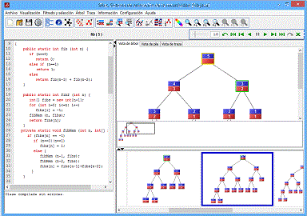

|
SRec es capaz de visualizar de una manera gráfica, sencilla e intuitiva la ejecución de algoritmos recursivos mediante árboles de activación, aportando además otras vistas tales como la pila de control, la traza de la ejecución y el código del algoritmo. SRec 1.2 está preparado para ofrecer vistas específicas para algoritmos diseñados bajo la técnica "Divide y Vencerás". Durante las visualizaciones, el usuario puede seleccionar qué información desea ver (parámetros, métodos...) y la aplicación le permite interactuar con las distintas vistas. La aplicación permite configurar múltiples opciones sobre las visualizaciones y además permite almacenarlas y cargarlas sin necesidad de generarlas una y otra vez, manteniendo todos los parámetros de configuración y el estado exacto en el que se encuentra la visualización en el momento de su guardado. SRec también permite visualizar y modificar el código de un algoritmo, bien para corregir errores, bien para modificar el comportamiento de dicho código. |
 |
__________